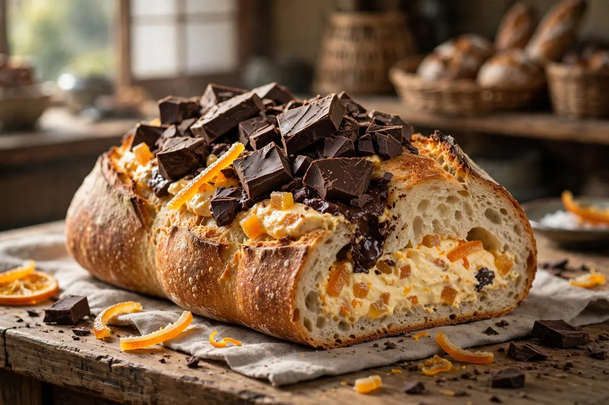
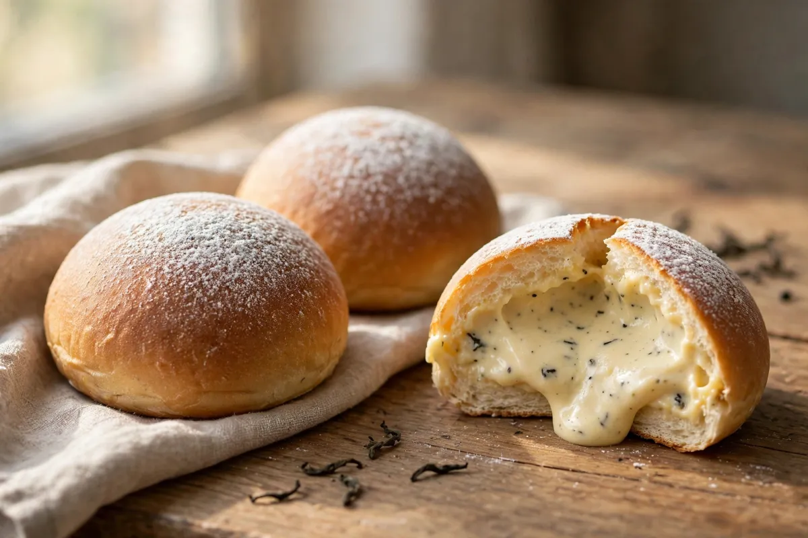
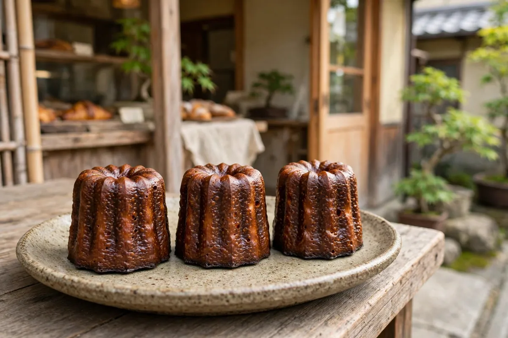
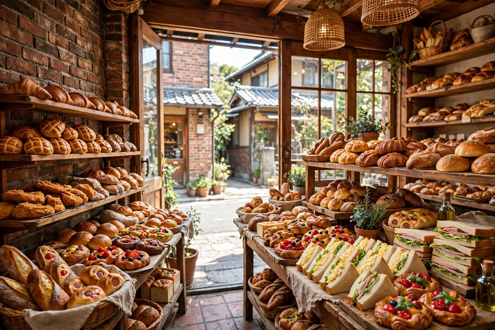

戦後間もない1952年に始まったパン屋です。2016年に店をリニューアルし、今は三代目が焼いています。二代目の昔ながらのパンと、三代目の新しいパンが同じ棚に並びます。
セミハードの生地に、大きくカットしたクーベルチュールチョコレートをゴロゴロと。中にはオレンジピールのクリーム。店頭に並ぶのは朝8時頃からで、暑い時期はお休みする季節の看板です。
懐かしのパ ...[truncated 13571 chars]ンからハード系、サンドイッチ、焼き菓子まで約100種類。パンによって使い分けるクリームや餡は自家製です。迷う時間も楽しい、通学路の名物パン屋です。
※写真はイメージです
歯切れの良いセミハード生地に、思わず二度見するほどたっぷりのクーベルチュールチョコレート。その下にはオレンジピールのクリームが隠れています。店頭に並ぶのは朝8時頃から。暑い時期はお休みする、季節限定の看板です。
価格は店頭でご確認ください（数が少ないため、前日までのお電話でのご予約がおすすめです）

※写真はイメージです
自家製の紅茶カスタードを使った人気のクリームパン。口に入れた瞬間、紅茶の風味がふわっと香ります。
150円 （税込・取材時点）

※写真はイメージです
もっちりとした生地が特徴の、フランスの焼き菓子。パン屋さんで買える甘いものとして、ファンの多い一品です。
180円 （税込・取材時点）
※店頭には約100種類のパンが並びます。上の価格は取材時点のものです。価格・品揃えは変更になる場合がありますので、最新情報は店頭・Instagramでご確認ください。名物のチョコレートのパンは価格が変動するため、店頭でご確認ください。
秋から冬は、名物「オレンジピールとクーベルチュールチョコレート」が店頭に並ぶ季節です（暑い時期はお休みします）。
チョコレートのパンは朝8時頃から店頭に並びます。数が少ないため、前日までのお電話でのご予約がおすすめです。
営業時間の変更・臨時休業・季節のパンの情報は、公式Instagramでお知らせしています。
1952年の創業から、親子代々で工房に立ってきたパン屋です。二代目が作る昔なつかしのパン、三代目が作るハード系のパンやサンドイッチ、焼き菓子。世代の違うおいしさが、同じ棚に並んでいるのが井上製パンの楽しさです。

※店内の写真はイメージです
Q. 予約はできますか？
はい。店頭とお電話（075-561-7836）で受け付けています。名物のチョコレートのパンは、前日までのご予約がおすすめです。DMでのご予約は受け付けていません。
Q. 駐車場はありますか？
専用駐車場はありません。近隣のコインパーキングをご利用ください。京阪「七条」駅からは徒歩約2分です。
Q. カードや電子マネーは使えますか？
お支払いは現金のみです。
Q. 店内で食べられますか？
テイクアウト専門のお店です。鴨川沿いや三十三間堂周辺で、買ったパンを楽しむ方も多いようです。